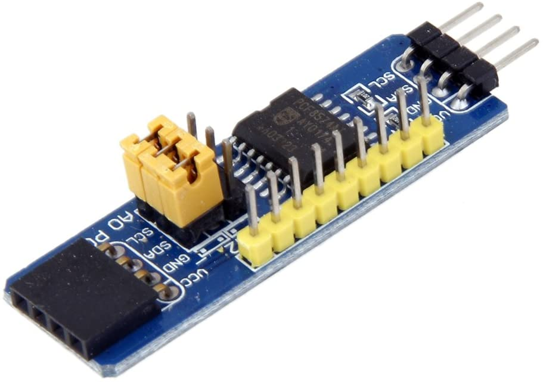

Accessory Controllers¶
Port Expanders¶
Port expanders allow you to control more devices that you may have as GPIO pins on your Arduino. While a Mega does have quite a few inputs for sensors and outputs for LEDs, Relays, etc., DCC++EX allows you to control many devices through its HAL feature. I2C (pronounced “I squared C”) is a serial bus that allows you to communicate with devices using only 2 pins on the Arduino. In this way, you can control 8 devices per board, times 8 boards. That gives you 64 pins from just 2!
PCA8574 Port Expander¶
8-Bit parallel I2C I/O expander board. Provides 8 GPIO pins per board. It is the same chip used in the piggyback boards on most of the LCD displays. Be careful to NOT buy the piggyback boards as they have all the address pins pulled high and do not give access to the INT pin nor all of the GPIO pins - see below for more details.
Each pin of the PCF8574 operates as an input or an output. As an input, the pin is pulled up by a weak current source which cannot be turned off and should be pulled down to ground by the connected equipment (e.g. an open-collector output or a switch).
As an output, the pin is either pulled HIGH by the same weak current source (‘1’ state), or is pulled down to ground (‘0’ state). Consequently, its ability to source current is very limited (~100uA), but it is able to sink up to 25mA per pin (80mA total). In order to directly drive moderate-current devices such as LEDs, it is recommended that the LED be connected (with a suitable current-limiting resistor) between the output pin and +5V supply. The output will therefore be inverted (the LED will illuminate when the output is LOW and extinguish when HIGH).
{kind=link}
LOVIVER PCF8574 IO Expansion Board
or
DIYMORE PCF8574 IO Expansion Board
The PCF8574 piggyback boards are designed for fitting to the back of an LCD screen, to allow the screen to be controlled via an I2C serial connection. Consequently, there are some features which limit its usefulness for general purpose I/O.
Firstly, the address selectors (labelled A0-A2) are solder pads and so require a soldering iron to change them. By default the address is set to 0x27 (no solder connection).
Secondly, the pin layout is somewhat strange, and the pin headers do not present the pins in sequence.
Thirdly, one of the pins (P3) is designed to control the backlight of the LCD and so has an open-collector transistor connected to it; this pin can still be used as an output, bearing in mind that the transistor inverts the output signal; however, the transistor is capable of supporting a higher current and voltage than the PCF8574 pin is capable of directly (absolute maximum ratings 25V and 1.5A according to the datasheet), so may be useful.
{kind=link}
In the above image,
P0 to P7 are the individual GPIO pins of the PCF8574 device;
P3* is connected to the open collector of a transistor driven by GPIO pin P3;
VO is connected to the wiper of the potentiometer on the module and may be used for a preset voltage source;
** denotes a pin connected to the two-pin jumper on the left side of the module and should not be used;
NC denotes unused (non-connected) pins.